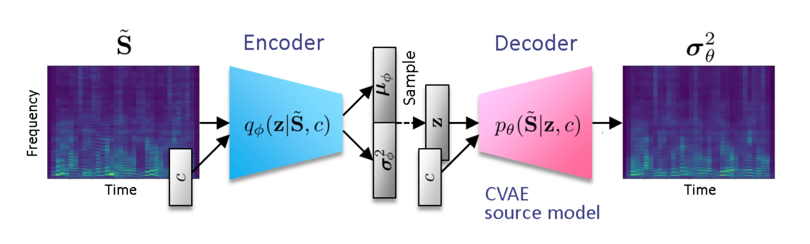

Algophony is a Software Design Lab class project that I initiated and collborated on with my classmates. Our goal was to create an app that leverages AI models to offer streamlined music making experiences. We took inspiration from platforms like Suno and Meta's Audiocraft and trained our own music generation model (CVAE) from scratch.
The key to this project is to train a model that can generate music on natural language command. Inspired by how neural networks are good at recognizing patterns and generating images, we decided to take a similar approach on audio spectrograms.
Data and Preprocessing
Our training data is made up of ~150k audio loops that I scraped from the web. I went for individual instrumental tracks instead of complete songs to reduce the learning complexity. Also, to ensure the model understands the musical contents, we used pre-trained classification models from Essentia to label each loop by their instrument types, genres, moods and themes. Finally, we converted audio data into mel-spectrograms using Short-Time Fourier Transform (STFT) to prepare them for the neural nets.
Distribution of sample instruments
Distribution of sample genres
Spectrogram Examples
Syntesizer with clean tone playing melody
Instrument with rich harmonics strumming chords
Training with CVAE
The architexture we chose is the Conditional Variational Auto Encoder (CVAE). As the diagram below shows, it consists of mirroring encoding and decoding neural layers (like regular VAE), with an additional one-hot encoding vector injected at the inference step, which has six bits that each indicates a different class of instruments. By training to reduce reconstruction errors (the difference between generated output and ground truth) and KL-Divergence (how much the new latent disribution diverged from normal distribution), it is able to generate new spectrograms by sampling from its latent space.
Like in most ML projects, the task of training the model is very compute heavy. At each encoding step, the model downscales a batch of 64 spectrogram images (with 768*64 pixels) into 64 feature maps using 2 convolutional neural layers and max pooling. The feature maps, which has 12.6 million floating points, are then flattened and fed through 2 more fully connected layers into latent vectors. The decoding process reverses these steps and upscales the latent vectors back into spectrograms. Then, we used Mean Square Error and KL-Divergence to evaluate the current latent space and improve it using back propagation. For each epoch, about 2400 batches need to be processed. Overall, it took us about 30 hours to run 150 epochs and hit the plauteau of trainig loss using Google Colab's Nvidia A100 GPUs.
Audio Conversion
To convert the spectrogram output into audio, we employ a pre-trained Hifi-GAN model. This method guarantees near lossless conversion, at least on our dataset. Here's the kind of sound that our model generates consistently.
The result is not the ideal musical content we were hoping to generate. However, it does sound like chords playing in a rhythmic pattern and not just the static noise we got in the beginning.
Conclusion
There are many reasons that we could not achieve state of the art of music generation. It is a complex and resource intensive task, and in retrospect, a bit too ambitious for our small group. The data size of 150k is decent enough compared to similar researches and the CVAE should generally work for any images. However, the size of the model is too small for it to be effective. With thousands of different chords, rhythms, and timbres creating millions of combinations in the time continuum that we perceive as music, the 64 feature maps and 512-dimensional latent vectors do not begin to scratch the surface.
The current best solutions are achieved using the transformer and diffusion methods which work well on complex generation tasks that requires an understanding of both language and image (or audio in this case). To achieve practical results, having a good diffusion model and the infrastructure that support its training and deployment is really important.